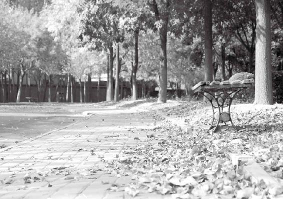
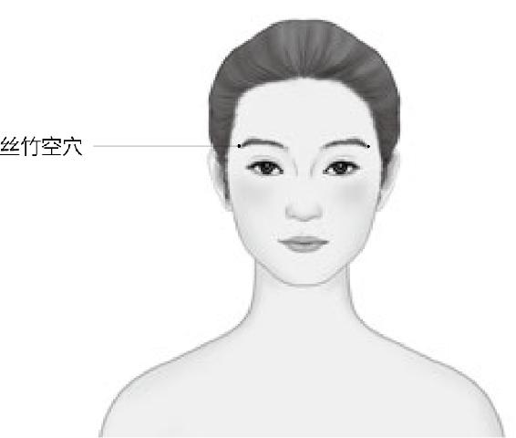
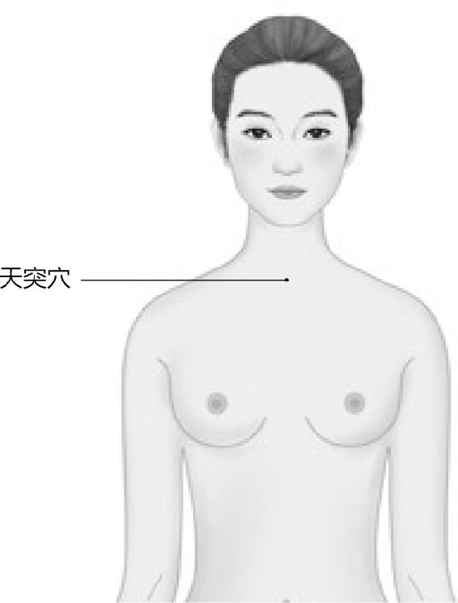
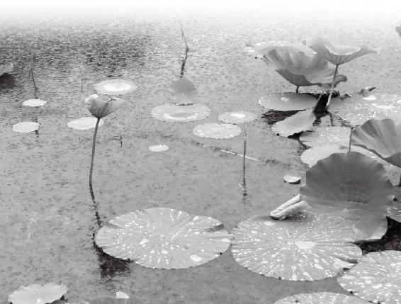
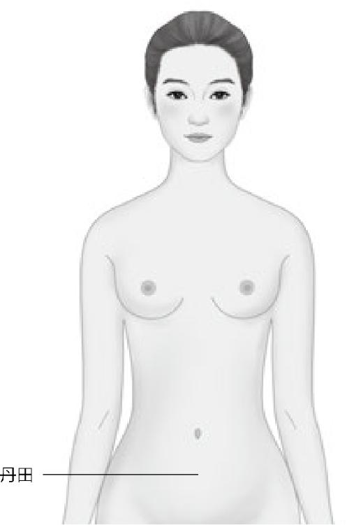
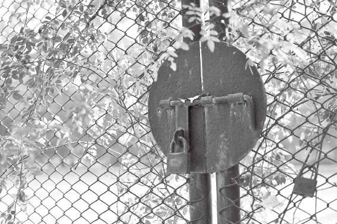
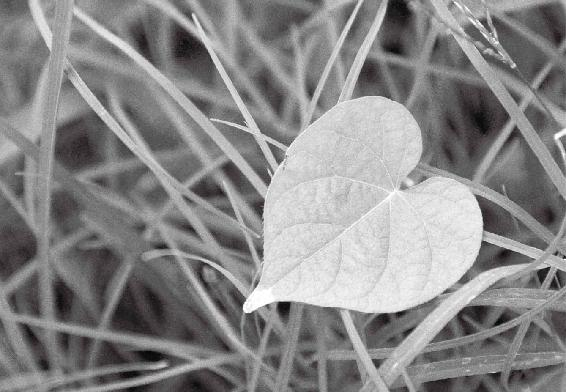

非典那年，北京那么多跟非典患者亲密接触的出租车司机，没一个得非典的，为什么？
寒的时候，你要努力让身体暖和一点；热的时候，你就要努力让身体凉一点，达成中和。这是一种养生和做人的中庸之道。外面怎么变，身体能感应到，也跟着变，绝对不要说一根筋儿地生活。
人体本身有一种保护自己的“卫气”，在平常，它是“罩”着我们的。当一个人的卫气特别强的时候，他的感染力也非常强。
经文：
天气清净，光明者也，藏德不止，故不下也。天明则日月不明，邪害空窍，阳气者闭塞，地气者冒明，云雾不精，则上应白露不下。交通不表，万物命故不施，不施则名木多死。恶气不发，风雨不节，白露不下，则菀槁不荣。贼风数至，暴雨数起，天地四时不相保，与道相失，则未央绝灭。唯圣人从之，故身无奇病，万物不失，生气不竭。
顺应天气，你就能活得很舒服
梁冬：在之前，我们讲到了春三月、夏三月、秋三月和冬三月。现在讲“天气清净，光明者也，藏德不止，故不下也。”
只有你的心神随着天气的变化去走，春天养生，夏天养长，秋天养收，冬天养藏，你就会与天气和谐共振，活得很舒服。
徐文兵：这是“四气调神大论篇”的第二段。头一段讲了四气，也就是四季的天气变化对人体的影响，以及人们应该怎样去顺应季节的变化来养生的道理。你看，繁体字的“应”（應）是带心的，底下是个“心”字。
感应是要动心的，只有你的心神随着天神，也就是天气的变化去走，春天养生，夏天养长，秋天养收，冬天养藏，你就会与天气和谐共振，活得很舒服。
为什么“四气调神大论”没讲“四季”调神，而是说的“四气”调神，其言外之意就是：当我们的生活环境有了春天温暖、夏天炎热、秋天肃杀、冬天寒凉的变化时，我们也应该顺应它。
什么是“天时不如地利，地利不如人和”。当环境鼓励你去生发、去创业的时候，那就是春天来了；当它很热烈地股市暴涨，大家都在创业，你也跟着去涨。
但当肃杀寒冷的秋冬来临，我们就要收一下，这就是能举一反三。这一点，大家一定要学会。春生、夏长、秋收、冬藏是天地正常的变化，但是有正常就有不正常。如果天气反常的话，我们应该怎么办？
学《黄帝内经》，我们一定要能够想到它的另一面， 我们看一个词的时候，应该要想到它的反义词。如果你觉得这句话不好理解，那你就想想与它相反的意思是什么？比如“天气清净”，它的相反意思就是“地气浑浊”。
我们经常说“天气”，气是看不见、摸不着的，它是一种能量。而地是有形的，地势有高低起伏嘛。
还有，用一些道具摆出尖锐的形状后，它就带着一种杀气，或者是一种戾气。所以说“天气”对“地势”，“清”对“浊”，那“净”呢？眼不见为净。《西游记》里的沙僧叫悟净，为什么叫“悟净”？“净”是什么？眼不见。有时我们看见风，看见水，挺干净的吧？但是沙僧的本领是什么？他悟到了貌似干净的水和风里面有东西。所以，风的繁体字“風”里面有个“虫”字。水尽管那么清，那么净，但它里面有微生物。
“悟净”是说能悟到、看到有形的的物质；“悟能”是指能悟到气的境界，能看到肉眼看不到的微生物。“悟空”则是能悟到“气”背后的东西，无中生有。
即使在没有发明显微镜、放大镜的情况下，我们用心也能体会到水里面是有东西的。
梁冬：噢，悟净是这个意思啊。
徐文兵：所以，悟净是说能悟到、看到有形的的物质。但是还有些物质，它也存在，我们看不到，但是你不能因为看不到就否定它的存在。是吧！
梁冬：沙僧还那么有文化。
徐文兵：但是比沙僧级别更高的是猪八戒。
梁冬：“悟能”。
徐文兵：什么叫“悟能”？
梁冬：“能”是能量的意思。
徐文兵：猪八戒能悟到气的境界了，能看到肉眼看不到的微生物。沙僧悟到的还只是物质境界，所以猪八戒的武功、智慧水平比沙僧高，他能悟到推动微生物背后的能量，所以他叫“悟能”。
梁冬：“悟空”怎么解呢？
徐文兵：气的后面就是空。什么叫“空”？就是玄。我们说气是一种能量，它还是“有”，而“有”的背后就是“无”了，无中生有，这就是孙悟空的水平，更高。
影响四季变化的主要因素是天气，而天气是一种能量，它是看不见的，是清澈的。
这是三种“悟”的层次，简单的一个名字就代表了一种概念。所以，天地清净里，“清”对“浊”，“净”对“污”。

草木有荣枯，人亦如此，所以，顺应四时变化，方能从容不迫。
天地和谐，人才平安
徐文兵：“天气清静”的下一句话是“光明者也”，“光明”对什么？
梁冬：黑暗。
徐文兵：幽暗或者晦暗。太阳出来了叫“光”；太阳被云遮住了，叫“晦”。就是晦明，明对暗。为什么要举它的反义词呢？这要说到下一句我们才能理解。天气是清净、光明的，我觉得这中间漏了一句话，即地势是阴暗、晦浊的。
接下来叫“藏德不止”。我们学《易经》，都知道里面有句话叫“天行健，君子以自强不息。地势坤，君子以厚德载物”。请问“藏德”的地方是指“地”还是“天”？
梁冬：地嘛。
徐文兵：所以把“地势是阴暗、晦浊的”的话加上大家就能理解了。天气是清净、光明的，地势是阴暗、晦浊的。正因为有了天和地这对阴阳之间的互动，才会有“地藏德”。
如果天气是清净、光明的，而地又封藏得很好的话，大自然就处于一种常态，就不会乱套，不会出现地震、山崩等自然灾害。
什么是“不止”？天体运行不止！
地势在那封藏不露，所以星星才不会掉下来，天地才保持了固有的一种存在状态。有一个成语叫“杞人忧天”，忧啥？忧地崩天坠。天原本是运行不止的，现在它止了，所以掉下来了。就像人造地球卫星失去动力以后，慢慢就掉下来，坠毁了。你知道吗？发射地球卫星的时候，发射的速度如果能达到7.8公里/秒以上，它居然就能挣脱地球对它的引力而飞上去。正因为卫星的背后有推动其运行的能量，它才会环绕着地球运行不止。
地是阴暗、晦浊的，它能够封藏自己。只有地封藏得比较好，才不会出现地震、山崩等自然灾害。如果天气是清净、光明的，而地又封藏得很好的话，那这个世界是会“藏德”，会“不止”的，这时候大自然就处于一种常态。这就是“藏德不止，故不下也”的意思。
梁冬：就是说，当大地闭藏得很好，能够令天体正常运行的时候，天才不会掉下来。
徐文兵：自然界才不会出现“杞人忧天”时那种地崩天坠的不正常状态。否则，前面提到的大自然里的“变态症状”就出现了。
梁冬：“天气清净，光明者也，藏德不止，故不下也。”这句话连起来应该怎么解释？
徐文兵：天是属阳性的，它应该是运行不止的；而地属静，主不动，它应该封藏得得体。只有天地配合好了，自然界才会保持现在这种固有的状态。否则，天地就乱套了。
天气一“变态”，人也“变态”
梁冬：接下来是“天明则日月不明，邪害空窍，阳气者闭塞，地气者冒明，云雾不精”，请问是什么意思？
徐文兵：这句话描述的是天地“变态”的样子，什么是“明”，天地的清净和光明，追根到底，它从哪儿来？一是从太阳来，太阳给了我们光，给了我们能量，推动了万物生长，这是“日”。第二来自于月亮。一个“日”加一个“月”，就是“明”！
如果太阳不普照大地或者月亮变得阴暗了，那么所有不正常的状态就会出现。天明是一种什么状态？天体运行的常态！当日月不明的时候，“邪害空窍”或者“邪害孔窍”，就是说当没有足够的光来照耀、温暖我们的时候，阴寒的邪气就会渗透到我们身体的孔窍里。
人体本来是封闭的，但它对外开放的有七个窍，七扇“窗户”。鼻子有两孔，眼睛有两只，一对耳朵，再加一张嘴，共是七窍。
当没有足够的光来照耀、温暖我们的时候，阴寒的邪气就会渗透到我们身体的孔窍——鼻子、眼睛、耳朵、嘴里。
梁冬：为什么人的眼睛、鼻子、耳朵都是两个孔，而嘴只有一个孔？
徐文兵：中医认为，顺应天地而生的人的这种形象代表了一种阴阳的格局。就像泰卦，“泰”对应的是好，“否”对应不好。那泰卦是什么？阴在上，阳在下。
地球上为什么会有生物，因为天地间是有交流的，地气蒸腾上天变成云，云变厚凝结变成雨降落下来，大自然有这种循环，才诞生了所有的生物。
阴在上，阳在下，如此才会有生命。如果反过来，就不会产生生命，因为阳是往上走，阴是往下沉的，这样就是个离绝卦。我们洗桑拿的时候，房里有个沙漏钟。刚进去时，那沙子在下面，进去以后一拧，沙子上来了。沙子属阴，空气属阳。沙子上来以后就开始漏，这时沙钟就开始动了，生命就开始了；漏完了，生命也结束了。胎儿在母体里的状态是头朝下，相当于沙漏里往下漏的沙子形状，等一出生，头一朝上，生命就开始了。
七窍是对外开放的，有阳光普照的时候，你接受的是阳气。如果阳气被遮住了，阴寒、阴邪就会通过这些窍深入到我们的体内，这就叫“邪害空窍”。
梁冬：开始计时了。
徐文兵：你在世上能留120年是老天规定的。所谓“漏”，就是人的脑髓逐渐像沙漏里的沙子一样，通过脊柱、脊髓往下漏，然后滋养到全身各个地方，漏着漏着，漏没了，生命就结束了。所以，养生就是怎样去“节能减排”，让自己的脑髓漏得慢点儿。
梁冬：回到前面一个未完的话题，为什么人的眼睛、鼻子、耳朵都是两个孔，而嘴只有一个孔？
徐文兵：双数在上。
你在世上能留120年是老天规定的。所以，养生就是怎样去“节能减排”，让自己的脑髓漏得慢点儿。
梁冬：双数属阴。
徐文兵：人的乳头是俩，肚脐只有一个，阴在上，阳在下。我刚才讲了，七窍是对外开放的，当它们对外开放，有阳光普照的时候，你接受的是阳气。如果阳气被遮住了，阴寒、阴邪就会通过这些窍深入到我们的体内，这就叫“邪害空窍”。
梁冬：鼻子、嘴巴都能进冷空气，但眼睛和耳朵，邪气、寒气怎么进得去呢？
徐文兵：当然可以，沙尘就容易进到眼睛里去。为什么生活在中国北方的人眼睛普遍都小，一个原因就是为了防风沙。人为什么有耳垢、有耳油？这也是一种自我保护，因为小虫子容易钻到耳朵里去。（如果你有耳垢耳油分泌的话，它一定是苦的，我也尝过，特别苦。）
梁冬：你怎么会有这种爱好呢？
空窍的“空”就是中医讲的穴位。
徐文兵：咱是医生，有些东西别人没尝，咱得尝过。
七窍，就好像是你身体暴露给外界的一个通道，如果窍外春光明媚，倒也无妨。但如果“日月不明”时你还“窗户”大开，那肯定容易受到外邪的侵害。
另外，空窍的“空”就是中医讲的穴位。很多穴位的名字里都有“空”字，比如说丝竹空穴。“丝竹”是什么？
邪气、寒气怎么进得去眼睛和耳朵？
梁冬：“丝竹”就是管弦乐嘛。
徐文兵：我问过不少人，大都不知道。有句诗叫“浔阳地僻无音乐，终岁不闻丝竹声”。古代用丝竹来象征管弦乐，“丝”是指弦乐，“竹”对应的是管乐。
丝竹空就在我们眉毛的根梢，它是三焦经的最后一个穴位。如果你有耳鸣、耳聋，听不到声音等症状，在这儿扎一针，你就又能听到音乐了。所以古人把这个穴位叫做“丝竹空”。在人体上，就目前来讲，官方承认的穴位有361个。
梁冬：从理论上来讲，应该是365个。
徐文兵：《黄帝内经》讲有365个，因为膀胱经在后背分成了四条经络，它把肺俞这个穴重复计算了，所以最后是365个。
为什么叫“穴位”？其实，这些地方都是身体里能量出入的地方。能量有出有入，入的那处地方叫“穴”，是凹下去的，这一块的气是往下沉的；但有的地方是冒气儿的，是往外突起的，那个穴叫“腧”，就是左边“月”字旁，右边一个“俞”——就是愉快的愉的那半边儿。这个正确发音叫shù。
从中医的阴阳角度来讲，应该叫“穴”和“腧”。但大家一说经络穴位，就认为都是往下凹的，这不对。比如，后背膀胱经上有对应人体十二脏腑的背俞穴，这些穴位的气都是往外顶的，都冒气儿，因为膀胱经属阳性。再比如说天突穴，也是往外突起的。“突”在古代是烟囱的意思，烟囱就是往外冒气的。

人体自有丝竹之乐。
天突穴在锁骨窝儿的嗓子眼处，一听它的名字就知道，它是往外冒的，还有像承山穴这些带有象形文字的穴位。往外突的都是冒气的。
“突”在古代是烟囱的意思，烟囱就是往外冒气的。
另外，穴位名叫“孔”、“空”、“穴”的，包括名字里含有“井”字的，都是往里凹的。
空和窍本来都是向外开放的，如果遇到“日月不明”，那些阴寒之气、邪气就会通过这些窍往里冲进我们人体里。
有的人患有花粉症，一天到晚打喷嚏，一说话，鼻子就囔囔的，这就叫“邪害空窍”了。

护好天突穴，免遭邪入肺。
鼻子本来是有预热功能的，你吸入冷空气时，它会先经过鼻腔加热一下。而且鼻腔里有很多毛，它还会过滤一下冷空气，把粉尘、污垢这些东西都堵在外面。但是当鼻子失去这种加热的功能后，冷空气，包括一些灰尘，就直接进入到肺里边去了，人就会咳。注意，是“咳”，不是“嗽”。“嗽”是食管里、胃里面的粘液往外排。而“咳”是气管、支气管里面的气和痰往外走。很多人就因为吸入了冷空气，或者是吃了寒凉的东西，通过胃来影响了他的肺，最后导致肺寒，这时候也会出现“邪害空窍”的现象。
梁冬：刚才讲到了鼻毛可以阻止一些脏东西进入体内。所以，在这里我要提醒大家，不要随便剪鼻毛，这是很危险的一件事情。
天气反常，我们的身体容易被堵
梁冬：请问“阳气者闭塞”是什么意思？
徐文兵：人跟天地是相应的，当外面的太阳光和月光被蒙蔽的时候，我们自身的阳气也出不来。
人体本身有一种保护自己的气，叫“卫气”，在平常，它是“罩”着我们的。当一个人的卫气特别强的时候，他的感染力也非常强，即使你没和他有身体上的接触，也能感觉到他身上的那种热量。
人体本身有一种保护自己的“卫气”，在平常，它是“罩”着我们的。当一个人的卫气特别强的时候，他的感染力也非常强。
梁冬：小伙儿火力壮。
徐文兵：“傻小子睡凉炕，全凭火力壮”说的就是年轻的小伙子阳气旺盛。但人体的阳气跟天地是相应的，当天地被蒙蔽的时候，人体的阳气就像进入了冬天一样，也会自然地收敛到体内。这时候就会出现阳气闭塞的症状，比如说鼻子不通气、鼻塞，这就是典型的阳气被闭塞住了的表现。
梁冬：我以前就觉得很奇怪，我以为是鼻涕堵住鼻子了，但我把鼻涕擤出来后，鼻子还是不通气。
徐文兵：因为有形的物质大家容易看到，无形的气一般看不到。
梁冬：那鼻子不通气的时候，我们按哪个穴位就可以稍微缓解一下？
徐文兵：迎香穴。就在鼻子的两侧，鼻唇沟附近。另外，治鼻子不通，我这里还有一个特别好的办法，每个人都有个“小耳朵”，盖着耳朵孔的叫“耳屏”，这上面有一个点就代表了我们的鼻子我们可以揉揉这儿。揉完以后，鼻子就会通气了。
人的身体绝不能受蒙蔽
梁冬：什么是“地气者冒明”？
徐文兵：《伤寒论》里有句话叫“其人叉手自冒心”，就是说有一种心脏病发作的时候，患者会把两只手交叉着“冒心”，就是盖住。什么叫“戴帽子”？穿靴戴帽，就是把头遮住或盖住。
那什么叫“地气者冒明”呢？地气属阴，它把阳气给遮住了，盖住了，这叫“冒”。中医里有个术语叫“眩冒”，“眩”就是眼前发黑。“冒”是什么？比如有人头不舒服的时候会说：“哎呀，我的头好像被一个什么东西裹着一样。”这就叫“冒”。“冒明”就好像戴着墨镜把阳光给遮住了。
梁冬：从这个角度来解释“感冒”是什么意思？
徐文兵：感冒就是你对外面的邪气产生一种感应后，随之出现的一种被蒙蔽的症状。很多人感冒后会出现“恶寒”，觉得冷，盖了好多层被子还是冷。你去量一下他的体温，其实在发烧，这说明寒气已经进入到他体内去了，这时候他不论盖多少层被子，没用。因为被子保护的是外面，但寒气已经进入到你的体内去了。所以，“感”是受到了影响，“冒”是被蒙蔽。日光和月光都被愁云惨雾给蒙蔽住了，人的精气神就出不来。
感冒就是你对外面的邪气产生一种感应后，随之出现的一种被蒙蔽的症状。“感”是受到了影响，“冒”是被蒙蔽。日光和月光都被愁云惨雾给蒙蔽住了，人的精气神就出不
我记得科学家在说恐龙灭绝的原因时，提出了一个理论：小行星撞地球。撞完后，粉尘一下就把日光给遮住了，出现了“地气冒明，云雾不精”的现象。结果地球一下变成了个冰窖、冷库了，所有的生物包括恐龙全部灭绝了。
我们的身体也会出现类似这样的问题，当没有阳气的鼓舞、激荡的时候，人体内阴寒的东西就会浮上来，比如鼻涕、眼泪这些粘液都出来了。
什么叫“痰迷心窍”？痰就是粘液的一种，一下堵在那儿了，结果这个人不是癫就是狂了。范进中举后疯疯癫癫的，最后是让他的老岳父胡屠户一巴掌扇出那一口痰，他才清醒过来。这也叫“地气冒明”，就是说体内的各种粘液把你的神明给遮住了，蒙蔽了。
什么叫“痰迷心窍”？就是说体内的各种粘液把你的神明给遮住了，蒙蔽了。
梁冬：所以，浓痰化不开也是我们平时应该注意到的一个问题。还有“则上应白露不下”这段话怎么解释呢？
徐文兵：露水是怎么形成的？白天没有露水，为什么？因为有阳光普照嘛。到了晚上，大地完全被冰冻住了，也没有露水。凌晨正是下露水的时候，这时候空气中的水蒸气就凝结成了露水。什么是“白露不下”？天地之间的交流没了，天地间的交流断了以后，没有阳光的照射，水蒸气也上不去了，大自然就没有任何雨露的滋润。开始是没有阳光，最后连雨露的滋润也没有了，这就表示生命的循环停止了。
梁冬：如果我们的身体被某些外在的原因给“蒙蔽”住了，也会产生一系列不好的后果。
徐文兵：比如说很多人有干渴的症状，一般治的时候就说得滋阴。我研究李老（名老中医李可）的医案后发现，李老不建议滋阴。他认为人之所以会干渴，是因为阳气没有能力把喝进去的水转化成体液去滋润身体，所以他给患有干渴症的人用的还是热药。我觉得他的理论根源就是从这儿来的。
名老中医李可认为：人之所以会干渴，是因为阳气没有能力把喝进去的水转化成体液去滋润身体。
“日月不明”的时候，自然界也没有白露，我们体内就缺少了滋润身体的眼泪、唾液、鼻涕等。这时候怎么办？还得拨云见日，增强体内的阳气，把被“地气冒明”住的阳气给化开。
梁冬：扶阳化阴嘛。
徐文兵：争取把天上的积雨云，让太阳一照就变成雨降下来，这样大地就不干燥了。

雨露是来自于天地的恩赐。
心肾不“交通”，生命有危险
梁冬：接下来是“交通不表，万物命故不施，不施则名木多死。”
中医经常说心肾要交，其实就是脑子里面的水下降到丹田后，变成热气再蒸腾上去，这就是人体内的“交通”。如果断了，人的生命就很危险。
徐文兵：天地间是有交流的。其实月亮上也有太阳光照射，地气蒸腾上去就散了，因为上面没有大气层。而地球上有大气层笼罩着，这样就形成了一种密闭的小空间。在这个小空间内，天地间就有个小循环。本来是水，被太阳一照就变成了水蒸气，然后被蒸腾上天，越往上，高处不胜寒，水蒸气又凝结成水了。这时候它就好像不走极端，上到一定程度还能下来，这叫交通。如果没有这种循环、交流，交通就阻断了，生命的“交通”被阻断以后，生命也该完结了。
梁冬：在我们的身体里面，这个“交通”的过程是怎么完成的呢？
徐文兵：你看，人体的精髓、津液聚集在我们的头脑里，然后沿着脊柱、脊髓下来，下到丹田。“丹田”在哪儿？
梁冬：丹田在肚脐附近。
徐文兵：关元这一带。我们常说小肚子一定要热，小肚子就是丹田。为什么叫“丹田”？小火炉。这样的话，炼精化气，炼气化神，再蒸腾起来，通过任脉、督脉，再输送到脑子里，这就是一个交通。
中医经常说心肾要交，其实就是脑子里面的水下降到丹田后，变成热气再蒸腾上去，这就是人体内的“交通”。如果断了，要么是精下不来，要么就是精化不成气，蒸腾不上去，这时人的生命也很危险了。

人体储藏“精”“气”“神”的小火炉。
梁冬：在平时，我们要保持头脑的冷静，小腹要温暖，这样人体内才能形成一个内循环。否则“万物命故不施，不施则名木多死”。
平时，我们头脑要保持冷静，小腹要温暖。
徐文兵：天地间的交通被阻断以后，地球上生长的植物、动物的生命也就结束了。别说“名木多死”，即使是没名的木也多死啊。这就是天地不正常时的一种状态。天地正常的状态是“地势坤”，是沉静不动的。而“天行健”是一种运行不止的状态。另外，日月带来的是光明，但是在不正常的状态下，自然界就会地在动，山在摇，然后天不动，没有光明。没有阳光的普照，四处一片愁云惨雾，比如说江南的那种梅雨天，雨一下就是好几个月，这都是阳气不足的表现。
江南的那种梅雨天，雨一下就是好几个月，这都是阳气不足的表现。
恶气千万别憋在体内
徐文兵：在不正常的天气状态下，人和其他的动物、植物都会闹病。在这样的情况下，阳气不能通达到体表，阳气者闭塞，而体内的阴寒浊物就会把自己给蒙蔽掉。人会活得不舒服，或者会闹病，甚至会要人的命。这就给了医生们一个指导，如果碰到这种情况，你应该怎么办？
在不正常的天气状态下，人和其他的动物、植物都会闹病。
梁冬：《黄帝内经》讲到这儿的时候就说“恶气不发”，什么意思？
徐文兵：天气本来是清净、光明的，这就相当于我们的身体里面有一种免疫和清洁系统。其实我们人体每天都在新陈代谢，在这个过程中，我们人体会产生一些废物。这些都是阴寒、污浊的东西。我曾经讲过，天气是清净的，地势是污浊的。这种污浊的东西，我们就叫“恶”，它是需要被阳光、阳气推动，或者是像我们焚烧垃圾一样把它烧掉、化掉。另外一种方法就是排出来。与其关门打狗，不如围三缺一，给邪气以出路，这样的话人体才会健康。可是在“地气冒明”——天气不是那么阳光明媚的情况下，阴寒把阳气蒙蔽了，恶毒的东西就会留存在体内。
给邪气以出路，人体才会健康。
北方人习惯了干燥的气候，到了南方以后就会闹出很多病，所以曹操当年征吴——赤壁之战的时候，一个是被火烧，另外一个最大的问题是遇到了瘟疫。北方人不适应南方的气候，主要的原因就是南方的湿气、浊气很重。
另外，我印象很深的就是对越自卫反击战的时候，我们很多北方的战士在那坚守，结果大家都得一种通病叫什么？烂裆，就是那种恶气发不出来，结果就聚在自己最阴的那个部位。我们有个穴位叫会阴。什么叫“会阴”？
会阴，人体所有阴气汇集的地方。
梁冬：就是所有的阴气汇聚在那里。
徐文兵：就到这儿来开会了。所以很多北方人到了南方后，就会出现阴囊湿疹、烂裆等症状，烂得有人脱皮都脱好几次。
梁冬：这时候拿一些艾灸去烧一会儿会比较好。
徐文兵：在当地专门有一种艾草或者是阳气比较旺的中草药，一般是艾灸，或者是用它煎煮以后敷在患有湿疹的地方。还有个办法叫“晒裆”，就是趁着太阳出来的时候，你啥药也不用，就躺那儿，脱得赤条条地去晒。
梁冬：四脚朝天！其实这也是一种自我保健的方法，我觉得很多朋友如果有机会的话，在家里面安全的地方，是可以对着阳光晒一晒的。
徐文兵：我在这里说的“恶气”，还只是一种浅表的湿浊，如果一个人在没有阳光照耀的情况下，阴寒、污浊的东西留在体内时间过长，或者留存的部位比较要害的话，会得很多类似肿瘤，甚至是癌症这样的大病。
我见过很多人，他们的生活方式貌似很健康，不抽烟、不喝酒，但是心情很压抑，活得很痛苦，这其实也是在制造恶气。我们经常说：“我可出了一口恶气”，但那种恶气要是没发出来呢？先是一口恶气，再加点儿其他的阴寒物质，最后就长出来一个东西。这也叫“恶气不发”。所以扶阳派绝对有它的道理，你要扶阳派从根儿上论，绝对是“四气调神大论”第二段。你把这一段论出来，解释扶阳派做的所有的事情，都对。
梁冬：据说以前还有一种治疗方法叫“放血法”，定期放一点血，让“恶气”排出来，古代的西方也有放血疗法。
“恶气”分两种，在没有阳光照耀的情况下，阴寒、污浊的东西留在体内时间过长，就会生湿浊，这是一种浅表的“恶气”；不抽烟、不喝酒，但是心情很压抑，活得很痛苦，这其实也是在制造“恶气”。
徐文兵：知道在什么时间、什么地点，在哪个穴位上放血，这是关键。如果你放错了，你就把你的神放出去了。为什么有的人一见血就昏过去了？因为神出去了，神就在血里呢。
梁冬：那为什么有些人见血不晕呢？
徐文兵：因为他体内的神气足啊，见血就晕的人特别容易受暗示，容易被煽动。

压抑的心情，如同被锁住了心门，不仅活得痛苦，其实也是在制造恶气。
梁冬：那一般来说女青年很少有这种情况，要不然她们不得每个月晕一次？
徐文兵：她出的是恶血，而放血是把本来不应该出来的血给放出来了。
为什么有的人一见血就昏过去了？因为神出去了；为什么有些人见血不晕呢？因为他体内的神气足啊，见血就晕的人特别容易受暗示，容易被煽动。
梁冬：我记得有个朋友说过：“当你头疼得不行的时候，在指尖划一刀，放两滴血，头一下子就不晕了。”
徐文兵：放血是一个非常好的疗法，但我不常用。因为消毒不干净的话容易造成感染。很多东西如果稍微有点儿闪失，就会出问题，所以我不推荐。
该冷不冷，该热不热，人会出问题
梁冬：刚才讲到了“恶气不发”，下面是“风雨不节，白露不下，则菀槁不荣”。
徐文兵：应时而至、如约而至叫“节”。我们讲过二十四节气的变化，哪天春风拂面，哪天雨水、谷雨，这都有其变化规律的。“风雨不节”的意思就是说，该刮风的时候不刮风，六月天下起了雪，这就是要出问题了。
梁冬：“白露不下，则菀槁不荣”，“菀槁”是什么意思？
徐文兵：“白露不下”前面已讲过，“菀槁”指植物。有句诗叫“离离原上草，一岁一枯荣”，枯了就是凋谢了，颜色变黄了，变黑了。重新披绿、挂青了叫“荣”。“菀槁不荣”就是说在风雨不节、日月不明的摧残下，很多植物先死掉了，死掉以后，草食动物也就没了，紧跟着肉食动物也完蛋了。因为它们之间是个食物链。
“菀槁”指植物。
梁冬：其实，我觉得这一段在某种程度上不仅仅说的是天地的变化，它讲的也是我们人体出现这种情况后的一系列反应。
进入秋天后，人体会像植物一样出现很多变化，会表现在末梢上，先掉头发，体毛、腋毛、阴毛都会掉。
徐文兵：进入秋天后，我们人体会像植物一样，很多变化会表现在末梢上，先掉头发，体毛、腋毛、阴毛都会掉。
梁冬：所以，有一天如果你发现自己的腋毛开始掉，那你要提醒自己，该注意身体了。
徐文兵：那绝对要出问题的，包括你一洗头发，大把大把地脱发时，赶紧去调整自己身体吧，别折腾了。
没有谁受得了“贼风”“暴雨”的频频光临
梁冬：刚才讲到了“白露不下，则菀槁不荣”，接下来是“贼风数至，暴雨数起，天地四时不相保，与道相失”。
徐文兵：这一段讲的是天地的一种变态，不是有规律的变化，在“日月不明”的情况下，还会出现阴风、贼风。我们讲过“虚邪贼风，避之有时”，“避之有时”就是说，虚邪、贼风来的时候是有规律的。比如我们晚上睡着了，阳气收回到体内的时候，如果窗户没关严，贼会偷偷摸摸地进来。而在这种气候异常变化的状态下，贼风就会不知在什么时候就刮起来了，而且是频繁地来。什么是“数（shuò）至”，多次频繁地来。
心跳如果低于60次，那就叫“迟脉”，或者叫“缓脉”。如果过了80次，甚至到了90、100次，那就叫数脉，或者叫疾脉。
中医号脉叫“数（shuò）脉”，心跳跳得非常快的时候，我们叫数脉，比数脉还快的叫疾脉。
什么叫“数脉”呢？正常成年人的心跳一般在每分钟60～80次。我们讲，一呼一吸之间要一息四至。如果低于60次，那就叫“迟脉”，或者叫“缓脉”。如果过了80次，甚至到了90、100次，那就叫数脉，或者叫疾脉。这是自我衡量的一个标准。
“贼风数至”就是说这些贼风会频频地光顾你，频频被领导照顾还行，老被贼风照顾，那就受不了了。即使你是个健康的人，你也受不了“贼寇”老来袭扰你的边境，是吧？
“贼风数至”就是说这些贼风会频频地光顾你，老被贼风照顾，身心肯定就受不了。
梁冬：“暴雨数起”这句话该怎么解释？
徐文兵：我们经常说，该下雨的时候要下雨。但这种雨是暴雨，就是短时间内大量下的雨，暴雨也属于阴寒的东西。而贼风虽然属阳性，但它跟身体的振动频率不一致，会影响到身体的很多运动、变化。比如说受了贼风以后，它会让你产生一种震颤，还会让你的某些部位产生麻痹感，所以有些人会出现面瘫，有些人则会出现面部神经或者嘴唇不自主地抽动等症状。
暴雨也属于阴寒的东西。
梁冬：有些老年人在睡觉的时候吹风扇，一醒来毛病就出现了。
徐文兵：这就是人造贼风惹的祸，我们前面讲的还不是人造贼风，是天然变化的一种贼风。
环境再恶劣，人也有生存之道
徐文兵：“天地四时不相保，与道相失”，这句话是对所有不正常气候变化的概括，就是天地四时变化不按照四季生长、收藏的变化规律走了，这时候很多人的健康状况就会受到影响。
没长到头就死掉了，这叫“未央绝灭”。
什么叫“未央”？就是说生物的生长还没达到高峰就死掉了，夭折了。“央”是极点、顶点的意思。人、动物或是植物，有了生，还没长到头就死掉了，这叫“未央绝灭”。
梁冬：所以它叫“唯圣人从之，故身无奇病，万物不施，生气不竭。”
徐文兵：尽管生长的环境这么恶劣，但那些圣人“辨列星辰”“逆从阴阳”，能够在不正常的气候变化中找到自己的平衡点。通过一些人为的因素，在这种剧烈的“折腾”中找到一种对身体有益的方式，以保持身体的稳定、健康。
梁冬：他们其实是有一种自我调节的机制和功能。
徐文兵：外面怎么变，他们能感应到，也跟着变，他们绝对不会说一根筋儿地生活。
梁冬：“身无奇（jī）病”还是“身无奇（qí）病”啊？
圣人绝对不会一根筋儿地生活。
徐文兵：苛。
梁冬：但是我这个版本是奇。

人的生命有时也要向一片树叶学习。
徐文兵：错的。我们读书的时候是“身无苛病”。
白话文最可恶的地方，就在于它老把一组近义词叠在一块儿用，最后闹得意思含混不清。
我们经常说苛刻，那“苛刻”意思是什么？白话文最可恶的地方，就在于它老把一组近义词叠在一块儿用，最后闹得意思含混不清。我们理解“苛”的时候就容易理解成“刻板”的“刻”了，好像这人很刻薄的意思。
孔子说过一句话，叫“苛政猛于虎”，“苛”是什么意思？
真正的“苛”是细的意思，就是说分得很细、很小的那种条目。比如说，秦朝法家治国，你偷一袋谷子判什么刑，偷几颗瓜判什么刑都列得很细，这么治理国家就叫“苛政”。
“苛”是细的意思，就是说分得很细、很小的那种条目。
梁冬：现在很多企业里面都列出了太多的管理条目。
徐文兵：公司应该是粗放式管理，比如说有种管理方式叫“目标管理”，最高的管理方式是不管，那是更高层次的管理。
所以，“苛疾不起”就是见微知著，见一叶而知秋。圣人能够及时捕捉到天地之间气的异常变化，然后根据这种变化去调整自己的生活。比如说，该有阳光而没有的时候，那我就在家里做做艾灸，或者点把火，睡睡火炕，这样我们的鼻子就不会堵住了。如果这会儿你还在那儿喝着冷饮、吃着冰棍儿，对不起，你的身体没毛病才怪。
公司应该是粗放式管理，比如说有种管理方式叫“目标管理”，有的管理方式是不管，那是更高层次的管理。
梁冬：所以叫“和于阴阳”，“和”也就是“调和”。
徐文兵：我总在强调，要帮助大家恢复“知觉”。当你没有感觉的时候，你应该有知。当天不明、日月不明、地气者冒明，阴寒太重的时候，那你就得用点儿辛温散热的东西来保护身上的这一团阳气。
圣人能够及时捕捉到天地之间气的异常变化，然后根据这种变化去调整自己的生活。
梁冬：这也是一种中庸之道，就是说寒的时候，你要努力让身体暖和一点；热的时候，你就要努力让身体凉一点，达成中和。
徐文兵：中医其实就是一门调和的学问。
梁冬：本来春、夏、秋、冬的气候变化，日升月落都是有规律的。但很多时候大自然不是这样的，比如说，夏天不热，出现了冬天的气候现象，秋天不凉还像夏天一样炎热等等，这时候我们该如何对应？
北京那么多跟非典患者亲密接触的出租车司机，没一个得非典的，为什么？
徐文兵：非典那年，那是湿土特别重的一年。一般来说，北京每年的春天都有沙尘暴，但那年一点儿沙尘暴也没有，当时我们还暗自高兴，没想到湿气就来了。湿气来了以后，患有非典的人都住在医院的地下室，空气不流通，而且地下室一天里要洒几遍消毒水，闹得湿气更重。但是北京那么多跟非典患者亲密接触的出租车司机，没一个得非典的，为什么？因为他们开车的时候窗户开着，吹着风的。那会儿正是春夏之交的时候，老吹着风，风能胜湿。所以，在湿气、浊气特别重的时候，你就把风气引进来；而到了阴寒特别重的时候，你就把阳气引进来。要知道五行是个轮回，它们之间是相生相克的。如果你有这种“知”，那你就能处理这些问题。如果你无“知”，那你最好有“觉”，在湿气特别重的时候，注意吃点儿辛香、发散的食物。
在湿气、浊气特别重的时候，你就把风气引进来；而到了阴寒特别重的时候，你就把阳气引进来。
梁冬：如何化湿？您能不能给我们一点建议？
徐文兵：少吃过于甜和油腻的东西。另外，吃饭的时候多放点儿紫苏叶，如果你要出去旅游，吃海鲜的话，带瓶藿香正气水，这些都是比较好的化湿气的东西。出去的时候，兜里最好装几瓣蒜，“装蒜，装蒜”就是这么来的。
梁冬：“装蒜”是怎么回事？
徐文兵：古代有种服气疗法，就是把那些带有气味的药装在身上去避邪、避秽。除此之外，它还能振奋我们身体里的阳气。你吃蒜，怕别人闻着味儿不好，那你可以装瓣蒜在兜里，效果也差不多。所以，“装蒜”是中医里的一种治疗方法。
“装蒜”是中医里的一种治疗方法。
梁冬：装蒜怎么装？
徐文兵：装兜里不就完了？
梁冬：那要把蒜剥开吗？
徐文兵：剥开，要不剥开，它就没那个味儿。
梁冬：那能不能把它捣碎了贴在肚脐或是别的地方？
徐文兵：但那样的话，效果就比较“狠”，容易刺激皮肤长出来一些水泡，所以一般我不提倡。
像青菜一般都偏寒，所以炒菜的时候，我建议大家最好用蒜蓉去炒。先放些蒜末进锅里，煸炒出蒜的香味儿后，再把菜放进去，这样也能化湿气。